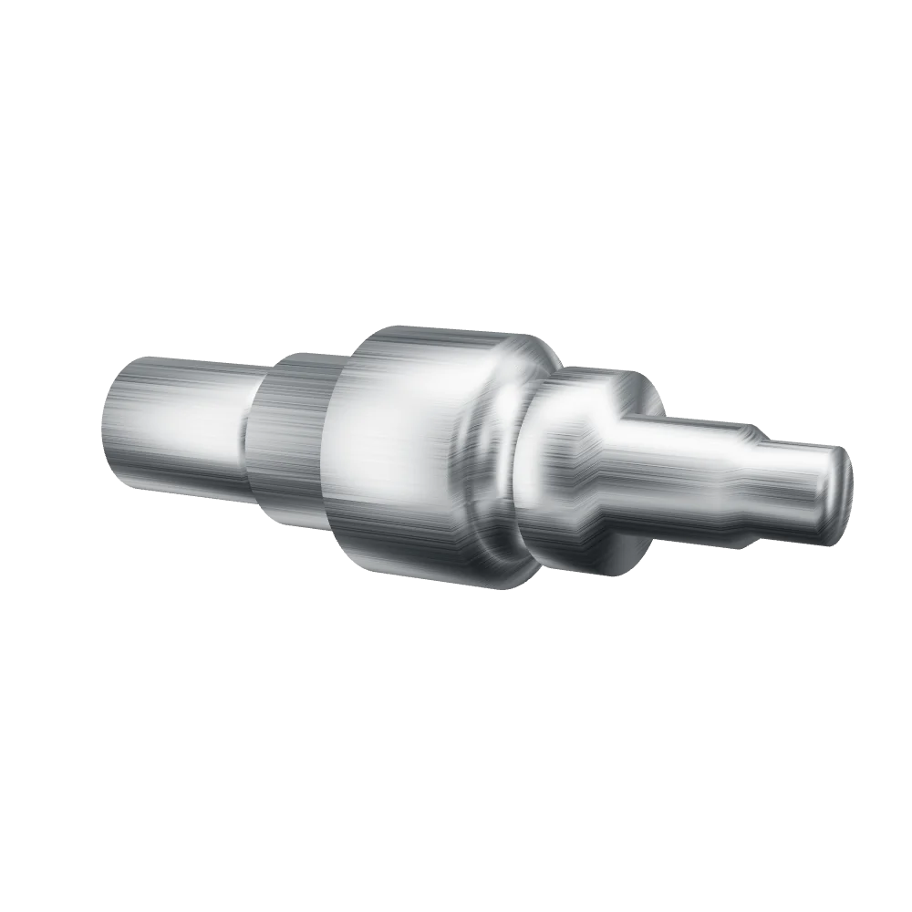
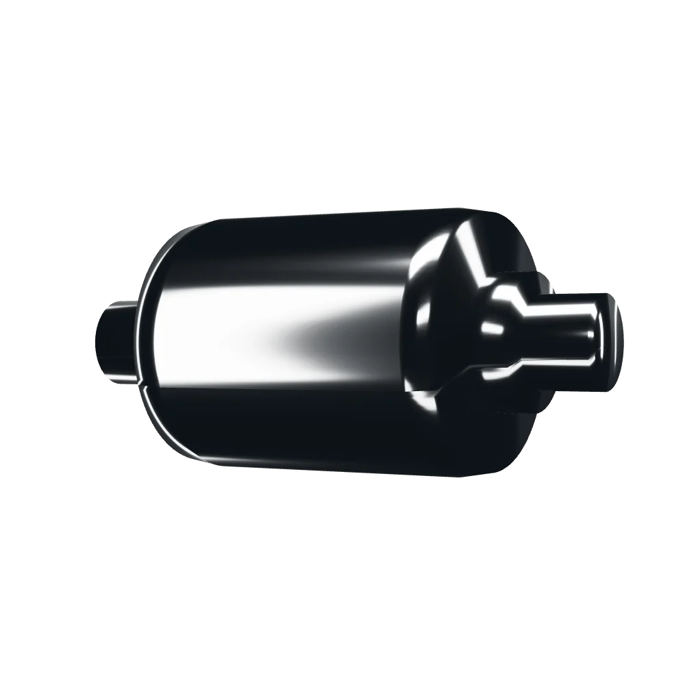
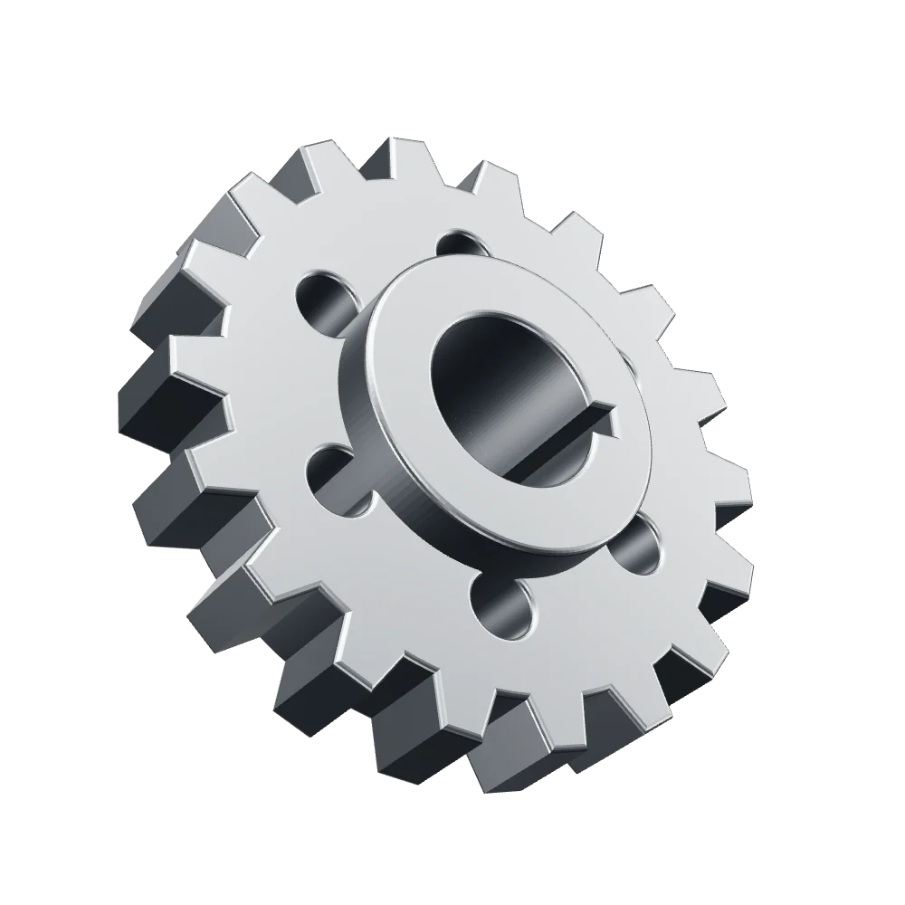

Vos pièces usinées sur plan, depuis 1979.
Fraisage, tournage et finition, de la pièce unique à la série. Une entreprise familiale à Nivelles, au service de l'industrie.
11 machines CNC630 m² d'atelierDevis gratuit
Nos capacités

Fraisage CNC
Pièces prismatiques réalisées selon votre cahier des charges, programmées sous Mastercam 3D.
| Parc | 6 fraiseuses CNC |
|---|---|
| Courses maximales | À fournir par GENA |
| Tolérances | À fournir par GENA |

Tournage CNC
Une pièce originale, de petites ou de grandes séries, avec des finitions soignées.
| Parc | 5 tours CNC |
|---|---|
| Diamètre et longueur | À fournir par GENA |
| Tolérances | À fournir par GENA |

Finition
Un soin particulier apporté à l'état de surface, directement à l'atelier.
| Parc | Rectifieuse cylindrique, honeuse, microbilleuse |
|---|---|
| États de surface | À fournir par GENA |

Réparation et machines sur mesure
Reprise de pièces existantes, mesure, dessin et usinage de pièces de rechange, ou conception de nouveaux équipements selon votre cahier des charges.
| À nous transmettre | Le plan de la machine ou un modèle de la pièce |
|---|---|
| Pour commencer | Audit de faisabilité, puis devis |
Pourquoi nous confier vos pièces
1979Une entreprise familiale, avec un savoir-faire transmis de génération en génération.
6 + 5Fraiseuses et tours CNC, avec les scies et machines de finition sur place.
Du plan à la pièceDu devis à la livraison, le même atelier suit votre commande.
30 kmEnviron, de Mons, Charleroi et Namur.
Secteurs
- Verrier
- Médical et pharmaceutique
- Naval
- Alimentaire
- Domotique
Comment ça se passe
- Vous envoyez le planOu un modèle de la pièce.
- Nous étudions la faisabilitéEt le cahier des charges.
- Vous recevez un devis gratuitAvec le prix et le délai de fabrication.
- Nous fabriquons et livronsAprès contrôle de la pièce.